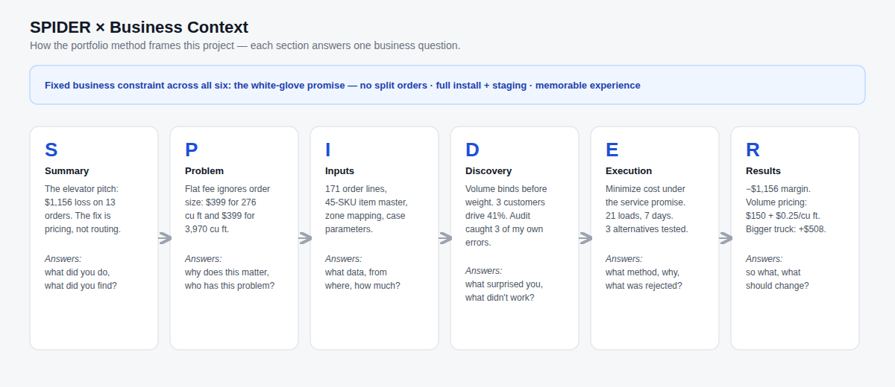
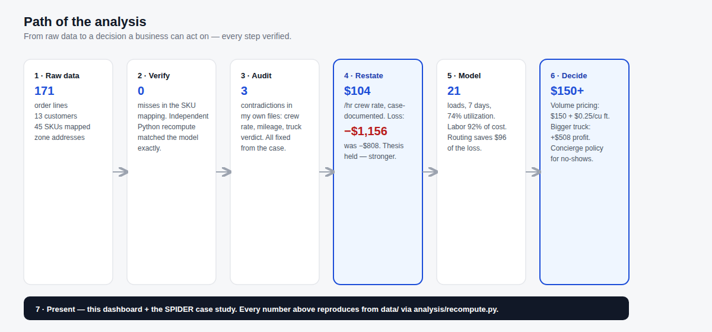
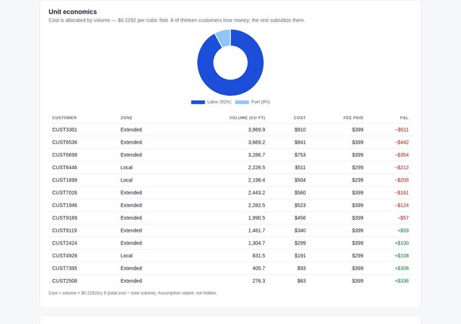

A national luxury furniture retailer promised white-glove delivery at a flat rate. I rebuilt the operation end to end — 171 order lines, 21 truckloads, 7 days — and proved the loss is structural. Labor is 92% of cost and happens inside customers' homes, where routing can't touch it.
The white-glove promise is fixed — no split orders, no rushed crews, full install and staging. That's the brand. But the flat fee ignores the only thing that drives cost: how much furniture is on the truck.
Every section of the portfolio method answers one business question — under one fixed constraint: the white-glove promise.


Cost allocated by volume — $0.2292 per cubic foot, stated not hidden. The five smallest orders subsidize the rest. A 20% routing improvement saves $96 against a $1,156 loss: 8% of the problem.

Excel handles weekly planning. Daily operations need real-time decision systems — for the dispatcher, the salesperson, and the driver.
iPad/POS plugin — salesperson enters cubic feet, gets the price instantly.
Live truck locations, buffer remaining per day, one-click reschedule, overtime alerts.
Navigation plus three exception buttons — the driver taps, the system handles the logic.
The repo ships the inputs and the script. One command verifies the totals, the P&L, and the scenarios.
# from the repo root python3 analysis/recompute.py # → Order lines: 171 | customers: 13 | SKUs mapped: 45 # → Total volume: 26,368.86 cu ft # → Total cost: $6,043.16 | Revenue: $4,887.00 | Net: $-1,156.16 (-23.7%)
Nine sections: the summary, the operations system, the model, the schedule, the routes, the costs, the scenarios, the pricing answer — and the tools to test it yourself.
Open the dashboard →